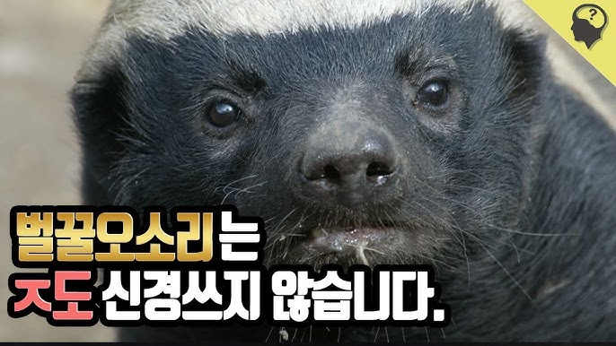

1. 벌꿀 오소리란?

벌꿀을 좋아해 꿀 냄새가 난다는 ‘벌꿀오소리’, 상대가 누군지 일단 덤비고 보는 분조장 귀요미 ~! 체급대비 근력이 포유류 중 가장 뛰어나며 대부분의 공격을 동체시력과 순발력으로 회피하고 빈틈을 공략하여 피해를 최소화하며 가장 효율적으로 적을 처치한다. 이로 인해 1v1 전투력이 높으며 동 체급에선 적수가 거의 없다고 보는 것이 타당하다. 널리 알려진 전적으로 아성체 사자 4마리와 싸워 이기는 것이 있다. 하지만 과장된 전투력으로 대중에 알려져 있어 과한 평가를 받고 있다. (실제로 잘 싸우긴 한다.)